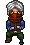

Rozmawiamy z najbliższym NPC -  .
Zakładamy otrzymany ekwipunek i ponownie rozmawiamy z Renardem .
.
Zakładamy otrzymany ekwipunek i ponownie rozmawiamy z Renardem .
Zabijamy pająka .
Oddajemy quest u , awansujemy na 3 lvl i wychodzimy z ruin.
Oddajemy szkatułkę od Renarda dla szabrowniczki Anisji .
Rozmawiamy z magiem Meliornem .
Szukamy kości i oddajemy je do .
Otwieramy Szkatułkę Poskromiciela* - lvl 5  . Otrzymane z niej nagrody przeciągamy do naszego ekwipunku.
. Otrzymane z niej nagrody przeciągamy do naszego ekwipunku.
*Łącznie otrzymamy 10 - od 5 do 50 lvla, co 5 lvli. Znajdziemy w nich pomocne błogosławieństwa, złoto, elementy ekwipunku, bagi oraz potki.
Pamiętaj aby je otwierać!
Rozmawiamy z szabrownikiem Sergiuszem (kierunek -> lewy górny róg)  .
.
Rozmawiamy z szabrownikiem Garretem 
Otrzymujemy ekwipunek, który zakładamy i udajemy się do jaskini powyżej. Zabijamy wszystko po drodze i rozmawiamy z , zabieramy od niego amulet i wychodzimy z jaskini.
Oddajemy zadanie u , awansujemy na 7 lvl.
Rozmawiamy z zielarką Flarenią , kupujemy jedyny przedmiot w jej sklepie i wracamy do .
Otrzymujemy kolejne elementy ekwipunku, awansujemy na 8 lvl i biegniemy porozmawiać z handlarzem .
Z otrzymanymi od niego potkami* udajemy się do Groty Pająków, zabijamy wszystkie ośmionogi i wracamy do naszego zleceniodawcy.
*Nie powinny nam być jednak potrzebne, bo po zabiciu kilku grupek otrzymamy lvl up i nasze życie się odnowi.
Awansujemy na 10 lvl i ulepszamy nasz ekwipunek w sklepie u Erwina.
Zakładamy nasz gear i sprzedajemy z bagów wszystko, co zbędne (więc generalnie po prostu wszystko co możemy). Otwieramy też szkatułkę na 10 lvl .
Biegniemy do szabrownika Jacka .
Rozmawiamy z alchemikiem Mirvasem i udajemy się do Groty Wściekłych Psów.
Uwaga! Psy są agresywne i zaatakują nas od razu po podejściu do nich.
Zabijamy wszystkie psy w grocie. Ponownie w trakcie wybijania mobków dostaniemy lvl up i wyleczymy się.
Przechodzimy do sali 2, zbieramy rumianek i wracamy do .
*możemy zabrać wszystkie rumianki i sprzedać je później u handlarza!
Uczymy się recepty przeciągając ją na ekwipunek. W zakładce rzemiosło znajdujemy miksturę śmiałków i używamy recepty.*
*nie są to zbyt optymalne potki, ale zawsze można sobie kilka wycraftować zbierając rumianki dookoła.
Ponownie rozmawiamy z i udajemy się do nowej lokacji - Zatopiony Szczyt. (kierunek -> lewy górny róg).
Rozmawiamy z Ernestem  , potem biegniemy do starego Fonso .
, potem biegniemy do starego Fonso .
Stworzy on dla nas unikatowe rękawice w zamian za przedmioty jakie dotychczas zebraliśmy z questów.
Realizujemy ofertę i ponownie rozmawiamy z . Awansujemy na 15 lvl, otwieramy szkatułkę i biegniemy do .
Ponownie modernizujemy cały nasz ekwipunek - pamiętaj aby sprzedać to czego już nie nosisz!
Biegniemy do Wilczej Groty (kierunek -> lewy dolny róg od Ernesta), wybijamy wszystkie wilki oraz naszą pierwszą elitę, Czarną Wilczycę!
Zdobywamy z niej unikat, z którym udajemy się do .
Craftujemy unikatową zbroję na naszą profesję, od razu możemy ją założyć.
Rozmawiamy z Vasylisem , a ten odsyła nas do kolejnej lokacji - Stare Ruiny, do Victora .
Zleca nam on przyniesienie szałwi oraz nagietka . Po dostarczeniu mu roślin otrzymujemy receptę, której uczymy się przeciągając ją na ekwipunek. Po nauczeniu się rozmawiamy z .
Ponownie za pomocą rzemiosła tworzymy wymaganą do zadania miksturę i rozmawiamy z .
Awansujemy na 18 lvl i udajemy się do Senki . Nie jest to ujęte w tutorialu, ale warto zrobić tego dodatkowego questa. Przeprowadzamy dialog następująco:
Co się stało?
Przepędzić te potwory?
Zaczekaj tu spokojnie, zaraz się z nimi rozprawię.
Udajemy się do Grambera . Mówimy, że zainteresowała nas płacząca dziewczynka. Kontynuując dialog, otrzymujemy questa na zabicie potworów z Przeklętego Zamku. Mamy więc dwa questy w quest logu na zabijanie mobów z tej samej lokacji.
Kierujemy się w prawy górny róg od do wejścia do Przeklętego Zamku. Znajdziemy ich kilka na mapie i to bez różnicy, do którego się udamy - wszystkie przejścia są ze sobą połączone.
Zabijamy potwory potrzebne do questa, schodząc na niższe piętra lokacji (Przeklęty Zamek - podziemia północne -> Przeklęty Zamek - zbrojownia -> Przeklęty Zamek - sala zgromadzeń), tam znajdziemy pogrupowane mobki dające więcej expa.
Przechodzimy na dalsze piętra: Przeklęty Zamek p.1 -> Przeklęty Zamek p.2 -> Przeklęty Zamek - Komnata Astratusa. Wchodzimy do lokacji i zabijamy Astratusa*.
*aby móc przejść, musimy zabić wszystkie mobki potrzebne do questa 'Przeklęte Zamczysko'
!protip! Po pokonaniu Astratusa możemy wyjść z lokacji i wejść do niej ponownie, gdzie przy odrobinie szczęścia (tzn. braku innych graczy) znowu spotkamy Astratusa. Dzieje się tak, gdyż pierwszy raz wchodzimy na lokację w ramach questa, a drugi raz wchodzimy na lokację dostępną dla wszystkich graczy.
Wracamy przechodząc przez wszystkie lokacje jeszcze raz lub używając teleportu do Victora (znajdziesz go w bagu).
Oddajemy quest u i bierzemy kolejnego, jednak zanim pójdziemy go zrobić, oddajemy jeszcze quest u Grambera .
Udajemy się do Goszy (Zatopiony Szczyt) . Biegniemy do Leśnej Przełęczy mapka1,
a z niej do Dzikich Pagórków mapka2. Zabijamy 5 pum po drodze. mapka3
Podążając ścieżką powyżej docieramy do Honzy
rozmawiamy z nim i przechodzimy przez grotę aż do Rannej Mushity.
Zabijamy ją!
!protip! Po zabiciu Mushity podejdź do skrzynki, aby otrzymać dodatkowe teleporty.
Wracamy do Honzy , otrzymujemy Klucz Mushity* i biegniemy do Azy (Zatopiony Szczyt), drogę znajdziesz na mapkach powyżej.
*Mushita to e2 na 23 lvl, możesz zawsze na nią wrócić mająć powyżej 30lvl!
Wracamy do Victora. Craftujemy heroiczne rękawice, awansujemy na 20 lvl. Otwieramy szkatułkę!
Ponownie rozmawiamy z . Ten teleportuje nas na mapę z herosem - Dominą Ecclesiae . Po rozmowie z nią jednak znika...
Czeka nas już tylko ostatnia rozmowa z . Gratulacje, ukończyłeś samouczek!
Otrzymałeś wykrywacz i zwój przywołania herosa. Wykorzystamy je w późniejszym stadium gry!